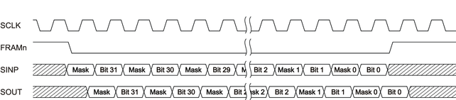

Mask mode of sequencer-controlled utility lines
Sequencer‑controlled utility lines can be masked using an enhanced serial protocol. Masked utility lines are ignored and the state is not changed regardless of the corresponding bit in the serial control word. For SmarTest 7, the mask mode can be set by an API or by using an extended pattern for sequencer‑controlled utility lines. SmarTest 8 masks utility lines by default and no additional setups or actions are required.
Mask mode
The mask for sequencer‑controlled utility lines can be defined as dynamic mask that is generated by the control pattern or as static mask that is stored and applied in the related hardware.
The combination of the dynamic mask and the static mask is supported:- Both the dynamic mask bit of the serial protocol and the static mask bit must be set to 1 to unmask the belonging utility line.
- The state of the belonging utility line is not changed if the dynamic mask bit of the serial protocol or the related bit of the static mask is set to 0.
- Dynamic mask
-
The dynamic mask is included in the serial protocol and doubles the protocol word compared to the normal sequential mode. The protocol is enhanced with an extra mask bit per utility line.
- The extra mask bit per utility line is to be set as follows:
- Mask bit set to 0: The bit is masked and the state of the utility line is not changed.
- Mask bit set to 1: The state of the utility line is set according to the belonging utility line bit.
- The enhanced protocol supports 2‑row and 4‑row utility blocks.
- Ganging (or cascading) of contiguous utility blocks is supported.
The following diagram shows the enhanced serial protocol for a 4-row utility block. The timing is the same as defined in Specifications for the serial interface.

- The extra mask bit per utility line is to be set as follows:
- Static mask
-
The static mask allows masking utility lines, so that they do not get switched dynamically anymore.
- The static mask bit per utility line is to be set accordingly to the
dynamic mask:
- Mask bit set to 0: The bit is masked and the state of the utility line is not changed.
- Mask bit set to 1: The state of the utility line is set according to the belonging utility line bit.
The default value of the static mask is 1: The related utility line is not masked.
- The static mask bit per utility line is to be set accordingly to the
dynamic mask:
How to use the mask mode
- SmarTest 8
- SmarTest 8 handles masking of utility lines internally by applying a combination of the dynamic mask and the static mask. No additional setups or actions are required in the test program.
- SmarTest 7
- The static mask is to be set by API UTILITY_SEQ_STATIC_MASK.
The static mask applies only to the mask mode TM::SEQ_POGO_MODE_OFF of the UTILITY_SEQ_POGO_MODE.mode() test method API.
- The dynamic mask mode is to be enabled by the two modes
- TM::SEQ_POGO_MASK_MODE_RD or
- TM::SEQ_POGO_MASK_MODE_RW
- On V93000 Pin Scale and Smart Scale systems, the FPGA bundle version 4.0.15r or higher is required. Minimum FPGA versions are 0x0A2 for ATH, CTH, LTH and 0x072 for STH.
- The static mask is to be set by API UTILITY_SEQ_STATIC_MASK.
Examples
Example 1: SmarTest 7 dynamic mask
The following SmarTest 7 example shows how the dynamic mask is enabled for utility block 1 and for block 2 to 5:
UTILITY_SEQ_MODE utiSeqModeOn;
UTILITY_SEQ_MODE utiSeqModeOff;
ON_FIRST_INVOCATION_BEGIN();
//
// Set utility block 1 in sequencer‑controlled masked reading and writing mode.
// Set utility block 2 to 5 in sequencer‑controlled masked reading mode.
//
utiSeqModeOn.pogoBlock(1).mode(TM::SEQ_POGO_MASK_MODE_RW );
utiSeqModeOn.pogoBlock(2,5).mode(TM::SEQ_POGO_MASK_MODE_RD );
utiSeqModeOn.execute();
//
// Perform the functional test
//
FUNCTIONAL_TEST();
//
// Disable the sequencer‑controlled mode of all utility blocks
//
utiSeqModeOff.pogoBlock().mode(TM::SEQ_POGO_MODE_OFF);
utiSeqModeOff.execute();
ON_FIRST_INVOCATION_END();Example 2: SmarTest 7 static mask
The following SmarTest 7 example shows how the static mask is set for utility block 1 and 2:
UTILITY_SEQ_MODE utiSeqModeOn;
UTILITY_SEQ_MODE utiSeqModeOff;
UTILITY_SEQ_STATIC_MASK utilitySeqStaticMask;
ON_FIRST_INVOCATION_BEGIN();
//
// Set utility block 1 in sequencer‑controlled masked reading and writing mode.
// Set utility block 2 to 5 in sequencer‑controlled masked reading mode.
//
utiSeqModeOn.pogoBlock(1).mode(TM::SEQ_POGO_MASK_MODE_RW );
utiSeqModeOn.pogoBlock(2,5).mode(TM::SEQ_POGO_MASK_MODE_RD );
utiSeqModeOn.execute();
//
// Set the static mask for pogo blocks 1 and 2
//
utilitySeqStaticMask.pogoBlock(1).mask(0x000E);
utilitySeqStaticMask.pogoBlock(2).mask(0x00E0);
utilitySeqStaticMask.execute();
//
// Perform the functional test
//
FUNCTIONAL_TEST();
//
// Disable the sequencer‑controlled mode of all utility blocks
//
utiSeqModeOff.pogoBlock().mode(TM::SEQ_POGO_MODE_OFF);
utiSeqModeOff.execute();
ON_FIRST_INVOCATION_END();
Functional changes
- Introduced in SmarTest 7.4.2